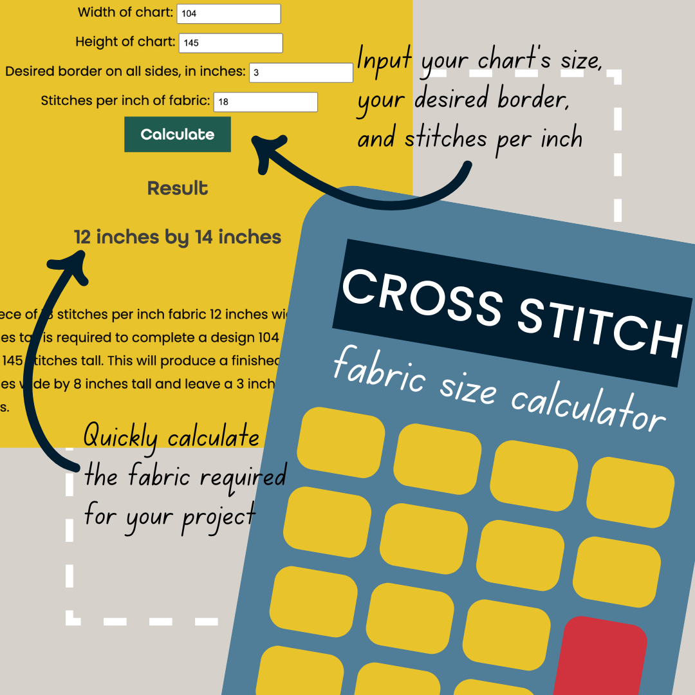

Kayla's Cross Stitch Fabric Size Calculator
This cross stitch calculator gives the measurement of your finished cross stitch project based on thread count and chart size.
There are many cross stitch fabric sizes, ranging from Aida cross stitch fabric with 14 stitches per inch (or less) to woven linen cross stitch fabric with 40 threads per inch (or even more!), often stitched over every two threads.
This means there is a big range in finished cross stitch sizes. Use this calculator to determine the finished size of your cross stitch. Don't forget to add a border for framing or finishing!
Input
Result
